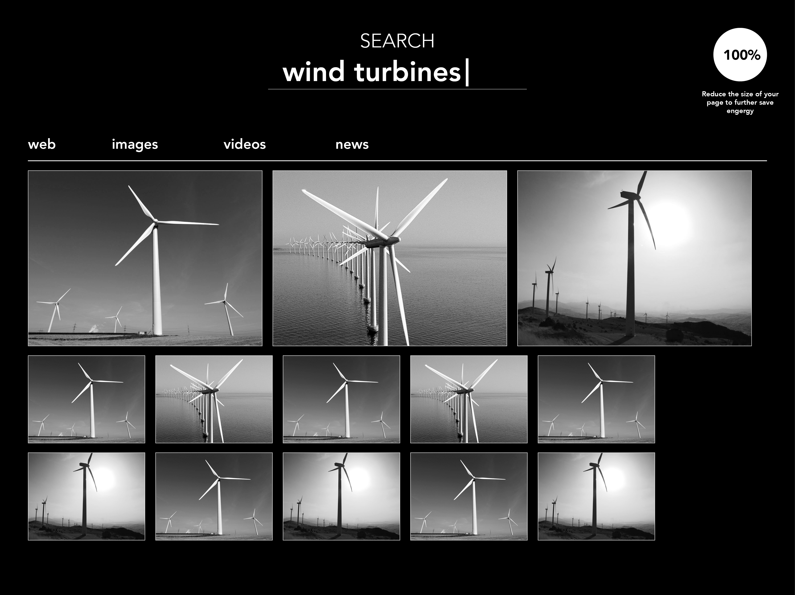

Click the round button on the side and notice that the page is converted to grayscale. By doing this the screen on your device stops using most of the RGB pixels allowing less power to be drawn. In future versions of Darhk, this toggle will appear next to the search bar that will be easily accessible.
Toggling back and forth between a bright and dark web page allows you to understand how much you might contribute to saving energy through changing how you use your web browser. Helpful and motivational tips will occassionally appear to inform you of how you're helping the environment through your actions.
Darhk will also allow you to reduce the size and scale of the webpage allowing you to further save more energy by reducing the area of usage on your device's screen by increments of 25%.
Darhk is powered by Google Search, the world's largest and most comprehensive index of web pages. It's constantly growing. We sort pages by their content and other factors. Behind your simple page of results is a complex system, carefully crafted and tested, to support more than one-hundred billion searches each month.
Darhk is optimized for all Android devices and MAC OS X. More devices including Windows will be supported in Fall 2016. Developer plugins and an SDK will be released at Googles annual I/O conference in May 2016.